Conviviality
Co-designing a rural school with the children who use it, then building it with them.
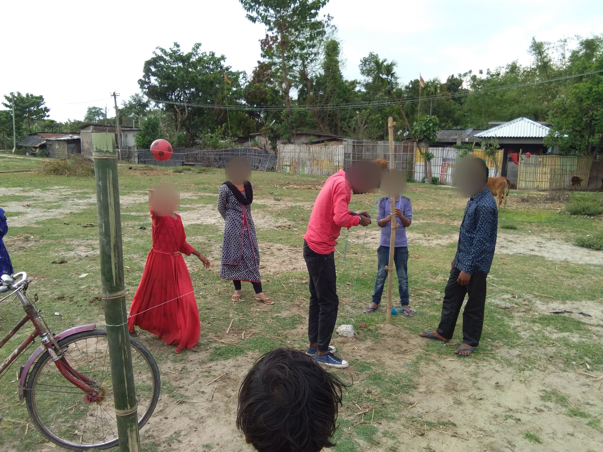
Hero imageSince 2010, every Indian child aged 6–14 has the right to free and compulsory education. Yet across rural India, having a school is one thing; creating an environment that keeps children there is another.
What school looks like. One teacher has handled every grade, kindergarten to fifth, for twelve years. There are no benches, boundary walls, clean toilets or play equipment. Many children come for the midday meal and leave once they've eaten.
Apathy all around. Parents and teachers know what's missing, but wait for the local government to fix it. Children see school as a place to eat, not belong. With no one taking ownership, little changes, and children, especially girls, drop out early.
Source: Ministry of Education, Government of India: Right to Education ↗
This project invited children to design and build a school they'd want to attend, bringing their community into the process.
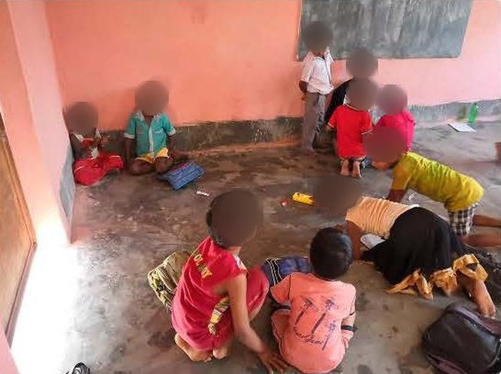
Classroom photoOver eight days, we visited three villages, spoke with parents, students and teachers, and worked with children to reimagine their school environment.
We were driven by one question: how does a family’s belief about educational infrastructure affect their understanding of their child’s overall development?
 Village survey
Village survey
 Sticky-note wall
Sticky-note wall
 Mid-day meal
Mid-day meal
 Ideal school drawings
Ideal school drawings
 Clay swing model
Clay swing model
 Card sorting
Card sorting
 Building the hoop
Building the hoop
 Wall murals
Wall murals
School was the one place the whole village shared. What happened inside it mirrored the divides outside.
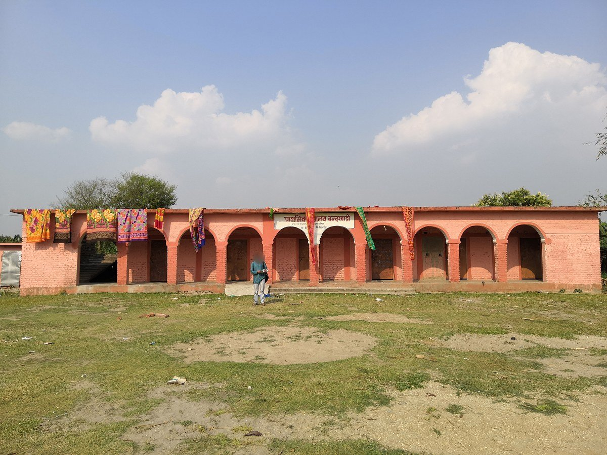
School groundsThe school
Without a fence, animals wander through the playground. People also trespass into the building at night.
Children often eat without washing their hands. The toilets are often not operational making it difficult for students to maintain proper hygiene.
Few schools offer education beyond primary grades. High schools are too far away or expensive for many.
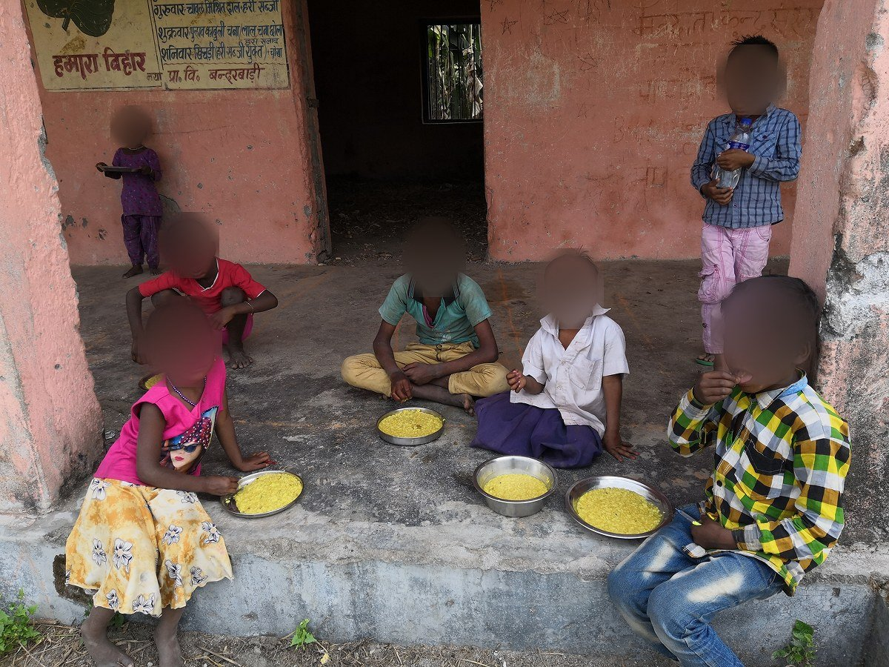
Children at schoolThe children
Some children leave as soon as lunch is over. Attendance peaks on Fridays, when eggs are served.
Boys discourage girls from joining sports and games. Gender barriers are reinforced from an early age.
Families from different castes and religions live in separate clusters. Even at school, lower-caste children rarely mix with others.
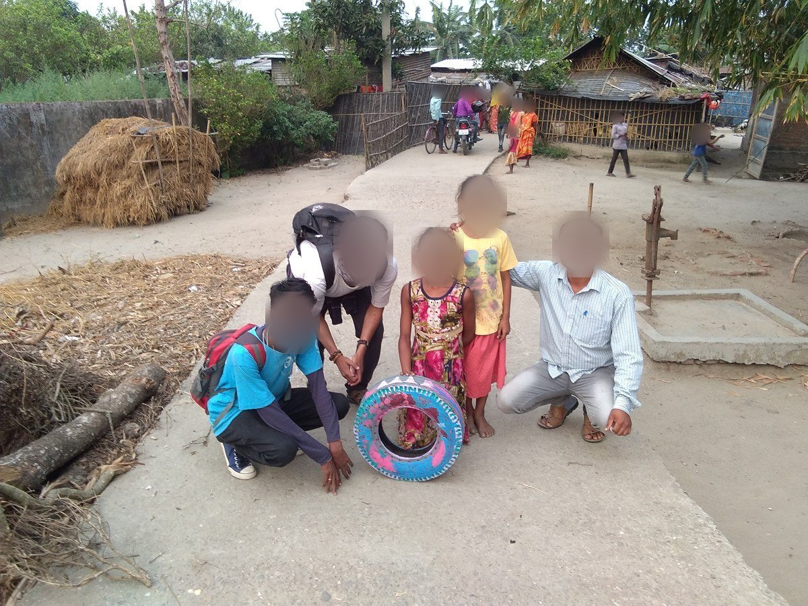
Family visitParents and community
Parents wanted better facilities and more engaging activities. Something that would give children a reason to stay interested in school.
Parents and teachers wait year after year for action. Every election brings renewed hope.
Adults agree they could help improve the village. But they wait for someone else to take the first step.
We focused on children, parents and the school, designing activities that would create lasting, tangible change.
Not every child could read or write with confidence. So every activity had to be simple enough for any child to join in.
- Drawing, not writing. Children who couldn’t write a sentence could still draw the school they wanted.
- Open to every child. Girls and boys, from every caste and religion, took part in the same activities.
- Local volunteers by our side. Two volunteers from Project Potential made it easier for us to talk with families in their own language, and to earn their trust.
- Materials they already knew. Sketch pens, clay and ice cream sticks, nothing that needed explaining.
-
01. Speculating Futures
Brief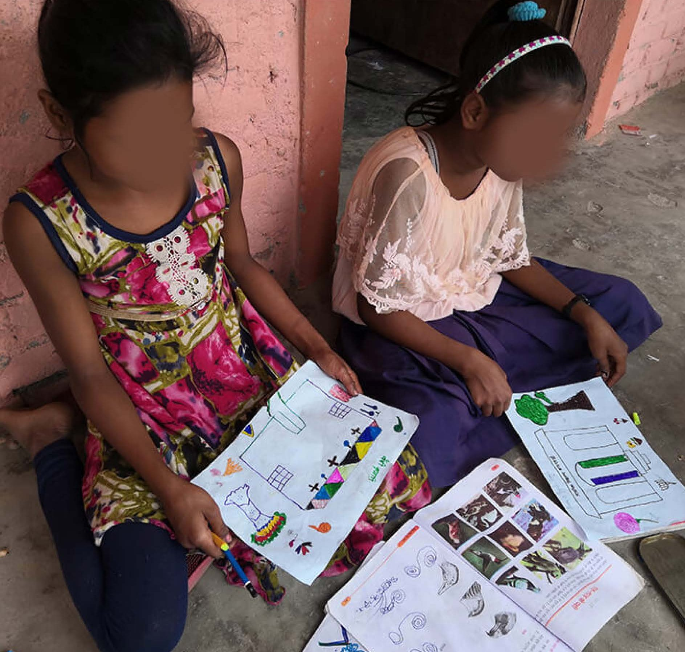
Children drawing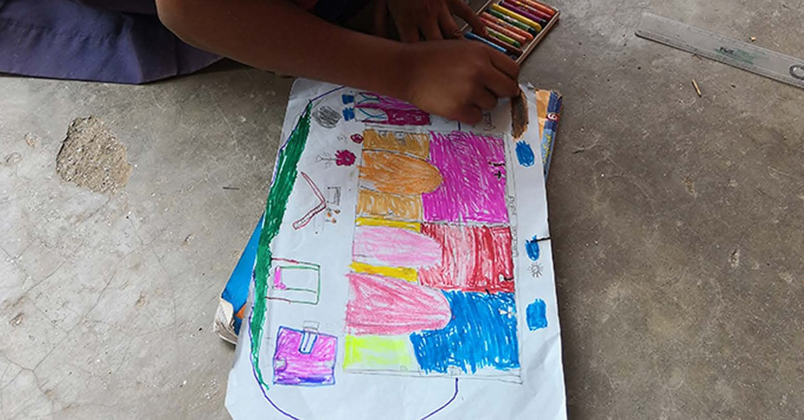
Drawing 1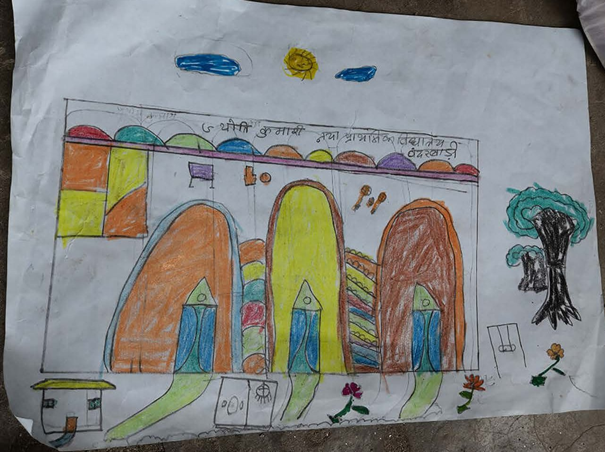
Drawing 2Children drew their ideal school. We also asked parents and siblings what would make them send a child to school.
What we saw- Swings, slides, toilets, handpumps, and mango and litchi trees filled the pages.
- Playgrounds for cricket, kabaddi, volleyball, basketball and badminton.
- Older children drew two-storey schools, reaching straight for scales and protractors.
- They stuck their drawings on the classroom walls with pride, a first sign of ownership.
-
02. Crafting Conviviality
Brief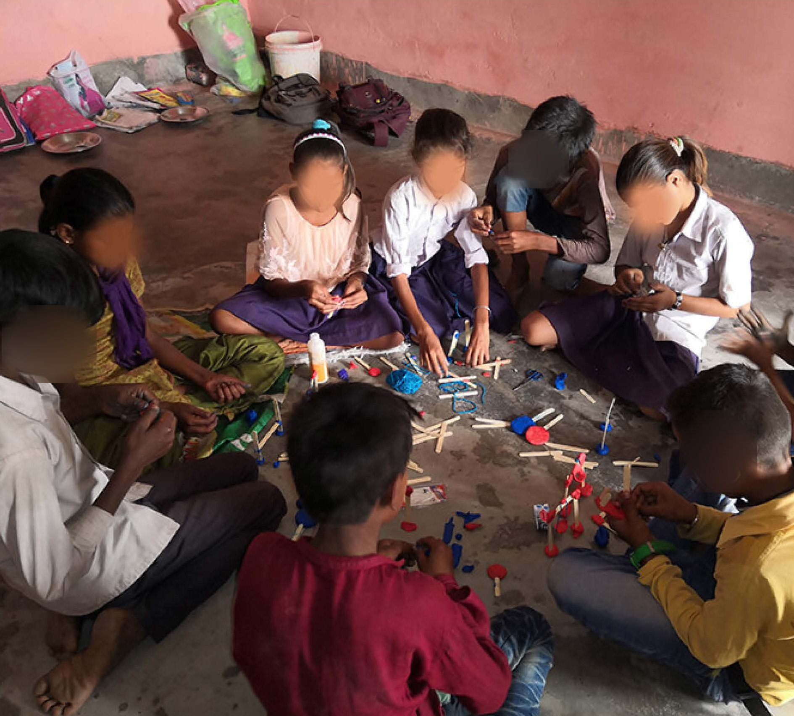
Modelling on the floor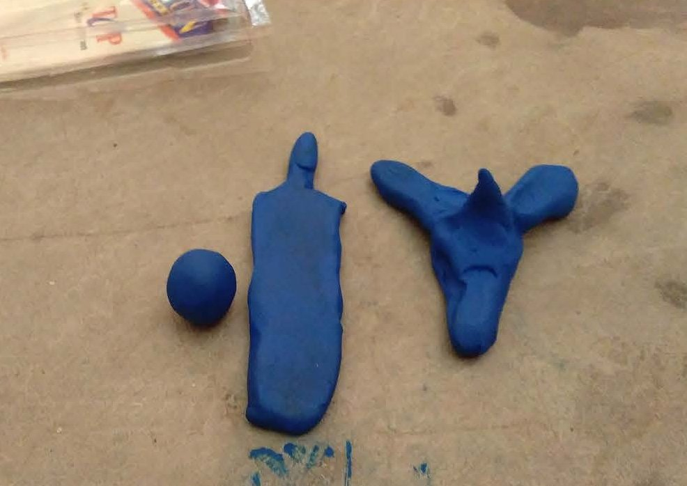
Clay pieces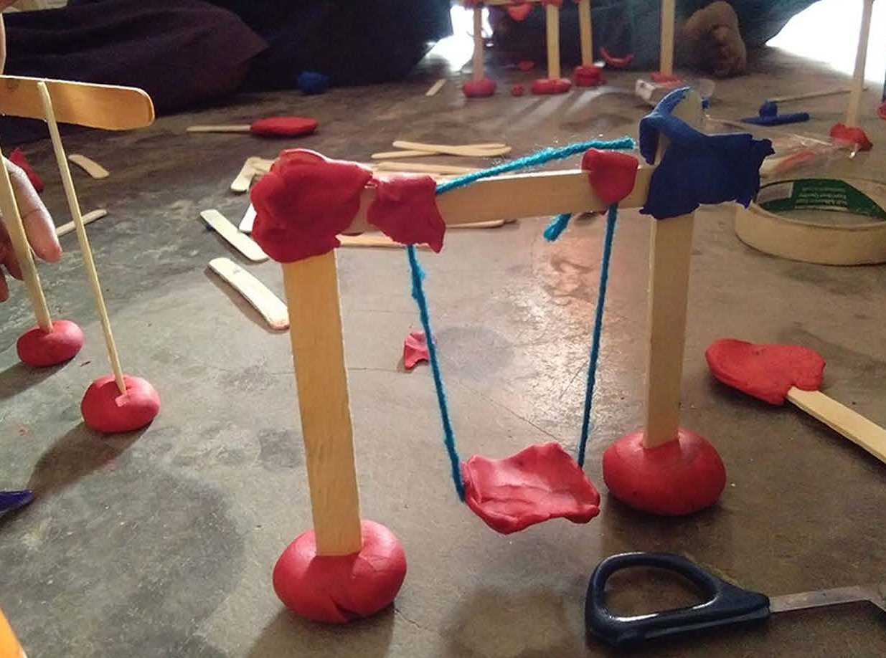
Clay-and-stick swingChildren moulded what they wanted for their school from clay, ice cream sticks and yarn.
What we saw- The drawings became objects: benches, cricket bats, badminton rackets and basketball hoops.
- They handled the materials with ease.
- Half the class made identical swings, copying their more skilled neighbours.
-
03. Card Sorting
Brief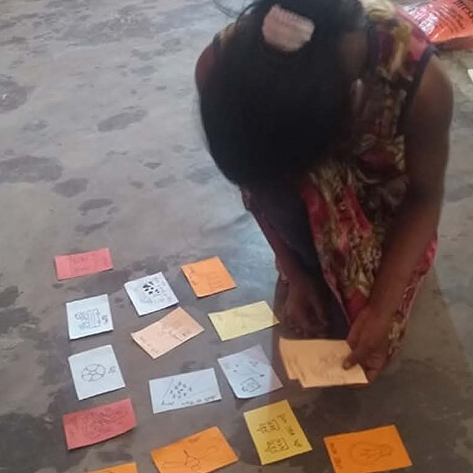
Laying out cards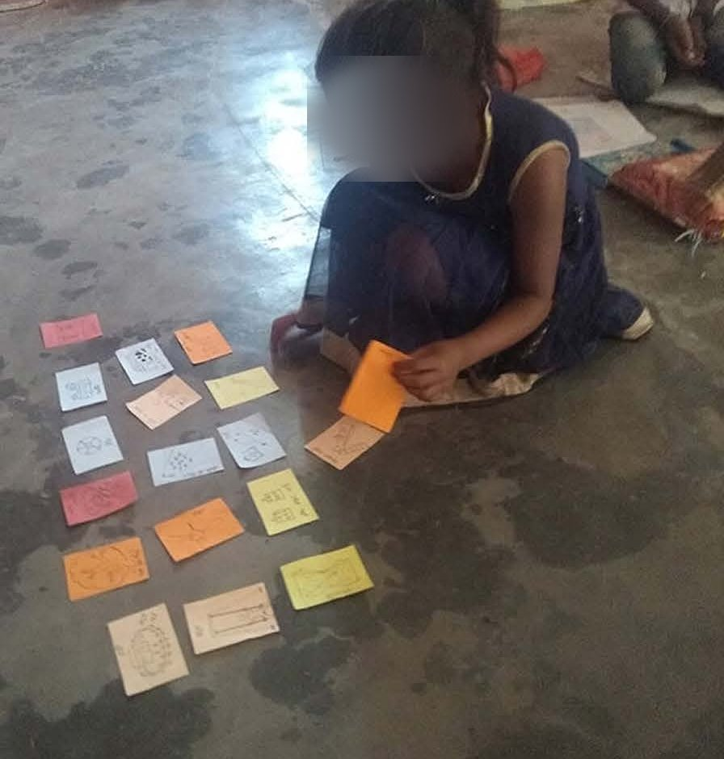
Sorting the cards The chosen cards
The chosen cards
From illustrated cards of basic school amenities, each child picked the three that mattered most.
What we saw- Play equipment was the most popular pick.
- Many chose chairs and tables for their classrooms.
- The older ones asked for books, and dustbins, knowing dirt spreads disease.
- Lights and fans were top picks too, and were installed on our last day, ahead of the general election.
The ideas were theirs. Next, the children built them.